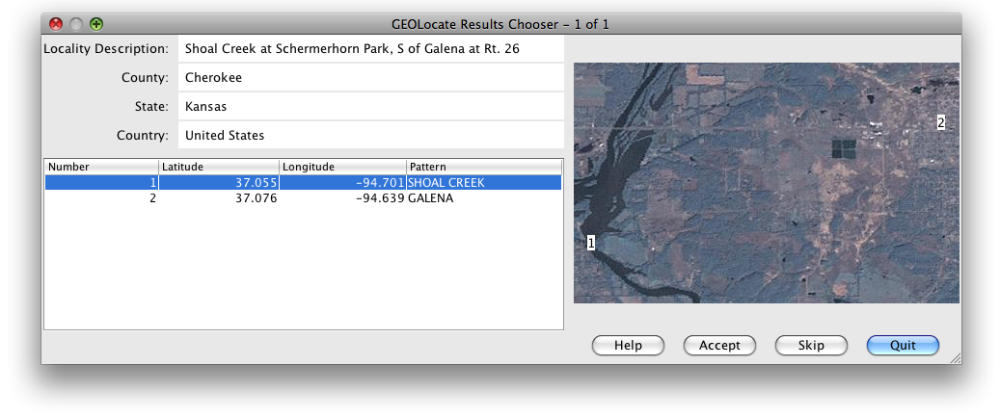

The WorkBench uses the GEOLocate web service to calculate the latitude and longitude positions from a textual locality description and three geography fields. The WorkBench processes all the selected rows and caches the information, enabling the results to be stepped through and the appropriate Latitude / Longitude to be either selected or skipped.
Notes:
Column Heading |
Data Needed |
| Locality Name | Yes |
| Country | Yes |
| State | Yes |
| County | Yes, for US data |
| Latitude1 | No |
| Longitude1 | No (this is a results column) |
The GEOLocate tool uses the data present in the Locality Name, Country, State and County colunns to query the GEOLocate service. The service will not work without data in all of the columns. The Latitude 1 and Longitude 1 columns are needed to accept the data returned by the GEOLocate service. If GEOLocate is able to obtain results for any of the records, the GEOLocate Results Chooser dialog will display results for each Data Set record.

GEOLocate Results Chooser
The number of records with results displays in the dialog title bar. The dialog itself displays results, through the GEOLocate web service, and and allows them to be selected.
The upper left portion of the dialog (ID, Country, Adm 1 or State, Adm 2 or County and Locality) displays the details about the query sent to GEOLocate from the Data Set.
The map displays a graphical representation of the result(s) using a pair of map servers, one hosted by NASA and one hosted at the University of Kansas.
The lower portion of the dialog displays the resulting matches returned by GEOLocate. Often, if the locality description is specific enough, GEOLocate will provide only one result. At times, the service provides numerous results.
To choose a result, select the row that corresponds with the correct coordinates of the Data Set record from the lower table.
To deselect a row, either select a different row or hold the Control key while clicking on the currently selected row.
The buttons at the bottom of the dialog offer the following functionality:
| Button | Result |
Help |
Opens the WorkBench Help Window |
Accept |
Stores the latitude and longitude values in the appropriate cells of the Data Set record corresponding to the query. |
Skip |
Ignores all results obtained for a given record, and displays the results for the next record. |
Done |
Accepts the currently selected row and closes the GEOLocate Results Chooser dialog. |
The dialog will close when all the records have been displayed. Results that were accepted will be written in the Latitude 1 and Longitude 1 columns of the record. Any data already in these columns will be overwritten.
The dialog will close when all the records have been displayed. Results that were accepted will be written in the Latitude 1 and Longitude 1 columns of the record. Any data already in these columns will be overwritten.
The WorkBench copies the latitude and longitude data into a hidden Source field. If the Data Set is uploaded into Specify 6 this hidden field will copy into the Source field in Specify 6 and will display on the Locality form.
The WorkBench does not keep any ancillary data.